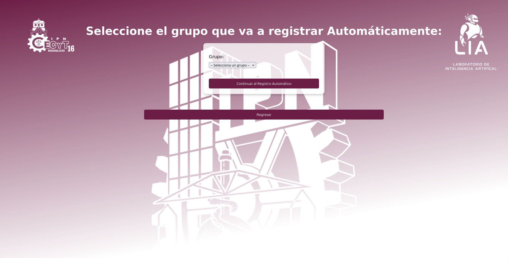
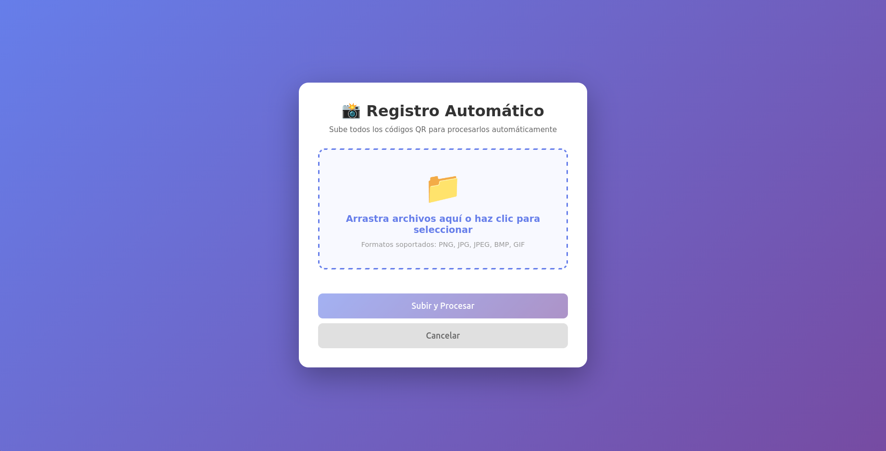
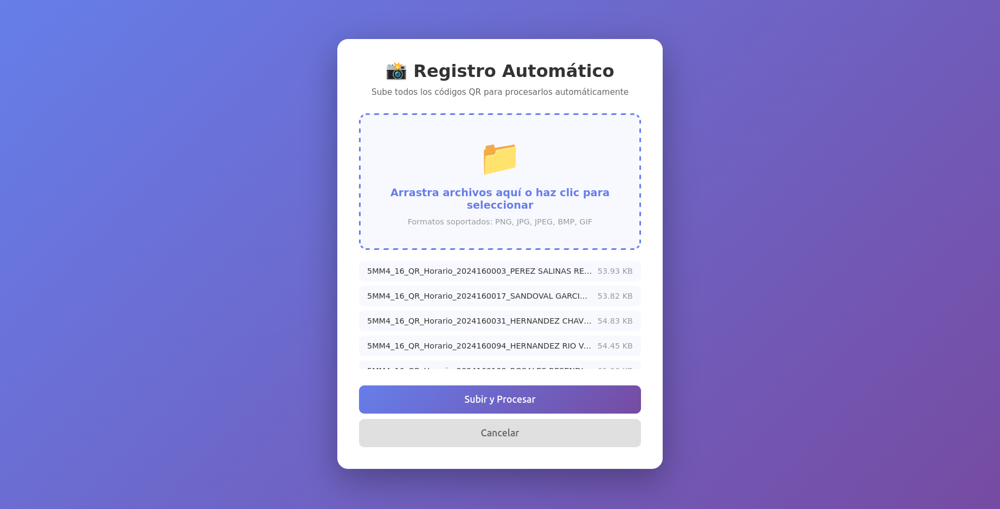
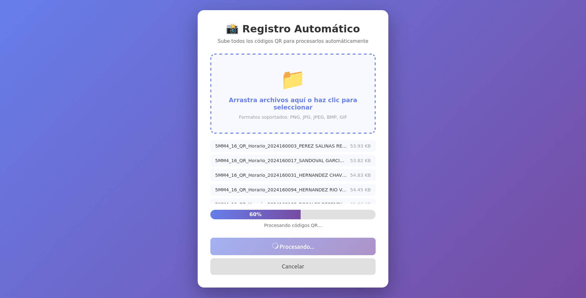
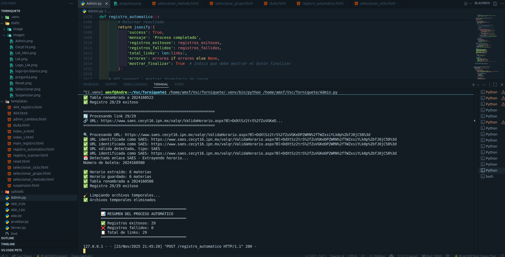
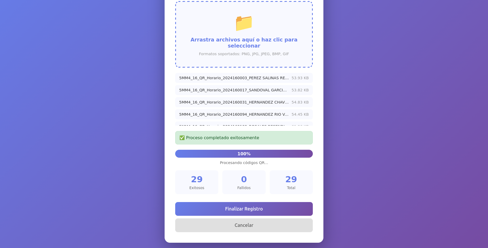

Seleccionar el grupo e insertar los archivos directamente
Al seleccionar la opción automático y aceptar, te enviará a la página de selección de grupo donde se tiene que escoger el grupo al que se va a registrar en ese momento.

Una vez seleccionado el grupo, te redirigirá a una página donde tendrás que subir todos los archivos en formato png, jpg, jpeg o bmp de los códigos QR. Se pueden subir todos de una vez o uno por uno.

Presiona el botón de subir y espera hasta que la barra llegue al 100%. Una vez finalizado, te redirigirá de vuelta al menú.


El sistema se encargará de registrar a todos los alumnos uno a uno sin necesidad de intervención. Se recomienda no recargar la página ni cambiar de pestaña durante este proceso.

Al terminar, saldrá una tabla donde se muestra cuántos links fueron escaneados correctamente y si hubo algunos con fallas.

En caso de que haya códigos QR con errores, intenta de nuevo después de un tiempo. Si la falla sigue, acude a la terminal del código para más detalles.
Para más información acudir al manual de prácticas donde se detalla paso a paso todo el procedimiento.